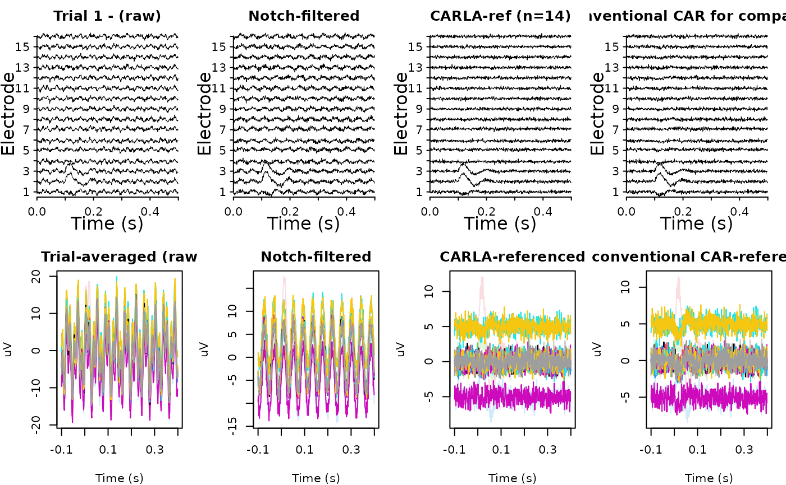

Selects an optimal subset of channels to use as the common average reference
(CAR) for cortico-cortical evoked potential (CCEP) data, following the
CARLA algorithm of Huang et al. (2024). Channels are ranked in
increasing order of their cross-trial covariance (or variance when only one
trial is available); subsets are then iteratively grown and the size that
yields the least anticorrelation between the candidate reference and the
remaining unreferenced channels is selected as optimal.
Arguments
- x
numeric array of shape
channels x time x trials; if a matrix is provided, it is treated aschannels x time(single trial). The signal must already be cropped to the responsive time window (typically0.01 sto0.3 spost-stimulus).- nboot
integer, number of bootstrapped trial resamplings used to estimate the optimization statistic; defaults to
100. Ignored when a single trial is supplied.- sensitive
logical; if
TRUE(and more than one trial is supplied), the more sensitive cutoff is used, corresponding to the channel count just before the first statistically significant decrease in the mean anticorrelation curve. The defaultFALSEreturns the global maximum of that curve.- min_size
integer, minimum subset size considered when
sensitive = TRUE; defaults tomax(2, ceiling(0.1 * nchan))as in the original implementation.- absolute_rank
logical; if
FALSE(the default), the per-channel ranking statistic is the signed mean of the off-diagonal trial-to-trial covariances, as in the original CARLA manuscript. This assumes a phase-locked evoked response, so trial-pair covariances on responsive channels are positive and a clean signed mean separates them from non-responsive channels. Set toTRUEto use the mean of the absolute covariances instead, which is more robust to evoked responses whose polarity flips across trials (e.g. alternating-polarity stimulation, biphasic CCEPs with jitter), at the cost of an upward bias on the non-responsive floor. Ignored when only one trial is supplied (the per-channel variance is used in that case).
Value
A list with the following elements:
channelsinteger vector, sorted indices (1-based) of the channels chosen to construct the common average reference.
carnumeric matrix of shape
time x trials(or numeric vector when only one trial is supplied) holding the common average signal computed fromchannels. Subtract this from each channel of the original signal to obtain the re-referenced data.orderinteger vector, channel indices sorted in increasing order of the ranking statistic.
varsnumeric vector, the per-channel ranking statistic (mean cross-trial covariance, or variance for a single trial).
n_optimuminteger, the optimal subset size selected.
zmin_meannumeric matrix of shape
nchan x nboot(or a length-nchanvector for a single trial) holding, for each subset size and bootstrap, the mean Fisher z-transformed correlation of the most globally anticorrelated unreferenced channel against the candidate CAR.
Details
The function is a faithful port of the core CARLA.m routine from
Huang et al.; it does not perform notch filtering, time-window cropping,
or grouping by stimulation site. Those steps belong to the surrounding
pre-processing pipeline (see the example below).
For each candidate subset size \(n = 2, \ldots, N\), the
candidate reference is computed as the channel-wise mean of the \(n\)
lowest-ranked channels. Each of those \(n\) channels is then correlated,
in its unreferenced form, against every channel of the candidate
re-referenced subset. The resulting Pearson correlations are
Fisher z-transformed; the row corresponding to the most globally
anticorrelated channel is recorded as zmin. The optimal \(n\)
is the one that maximizes (i.e. makes least negative) the mean of
zmin.
References
Huang H., Ojeda Valencia G., Gregg N. M., Osman G. M., Montoya M. N., Worrell G. A., Miller K. J., Hermes D. (2024). CARLA: Adjusted common average referencing for cortico-cortical evoked potential data. Journal of Neuroscience Methods, 407, 110153.
Examples
# ---- Simulate a small CCEP-like dataset --------------------------------
# 16 channels, 12 trials, sampled at 1 kHz, 0.5 s peri-stimulus epoch.
# Channels 1:4 are "responsive" (carry an evoked potential); the rest are
# noise-only and should make up the optimal CAR.
srate <- 1000
tt <- seq(-0.1, 0.4 - 1 / srate, by = 1 / srate) # time, seconds
nchan <- 16
ntrial <- 30
resp_ch <- 1:4
noise_ch <- 4:7
# Evoked potential template: damped sinusoid starting at t = 0
ep <- ifelse(tt >= 0,
80 * exp(-tt / 0.05) * sin(2 * pi * 12 * tt),
0)
# channels x time x trials
x_full <- array(rnorm(nchan * length(tt) * ntrial, sd = 5),
dim = c(nchan, length(tt), ntrial))
for (ch in resp_ch) {
for (k in seq_len(ntrial)) {
x_full[ch, , k] <- x_full[ch, , k] + ep * runif(1, -0.8, 1.2)
}
}
for (ch in noise_ch) {
for (k in seq_len(ntrial)) {
tmp <- x_full[ch, , k]
x_full[ch, , k] <- tmp + sign(ch %% 2 - 0.5) * 5 *
runif(length(tmp), 0.8, 1.2)
}
}
# Add artifacts common to all channels and trials
artifacts <- 6 * sin(2 * pi * 60 * tt) + 7 * sin(2 * pi * 24 * tt)
x_full <- sweep(x_full, 2L, artifacts, "+")
# ---- 1. Notch filter line noise (per channel, per trial) ---------------
# The CARLA paper notch-filters before ranking; the re-reference itself
# is applied to the original (unfiltered) signal.
x_clean <- x_full
for (ch in seq_len(nchan)) {
for (k in seq_len(ntrial)) {
x_clean[ch, , k] <- notch_filter(
x_full[ch, , k], sample_rate = srate,
lb = c(59, 119, 179), ub = c(61, 121, 181)
)
}
}
# ---- 2. Crop to the responsive window (0.01 s to 0.3 s post-stim) ------
resp_idx <- which(tt > 0.0 & tt <= 0.3)
x_resp <- x_clean[, resp_idx, , drop = FALSE]
# ---- 3. Run CARLA to pick reference channels ---------------------------
fit <- carla(x_resp, sensitive = TRUE)
fit$channels # selected reference channels (should exclude 1:4)
#> [1] 1 3 4 5 6 7 8 9 10 11 12 13 15 16
fit$n_optimum # number of channels in the optimal CAR
#> [1] 14
# ---- 4. Re-reference the ORIGINAL (unfiltered) signal ------------------
# mean or median, your choice!
car_full <- apply(x_full[fit$channels, , , drop = FALSE], c(2, 3), mean)
# old-style: using all channels for CAR
car_old <- apply(x_full, c(2, 3), mean)
x_reref <- sweep(x_full, c(2, 3), car_full, "-")
x_compare <- sweep(x_full, c(2, 3), car_old, "-")
# ---- 5. Inspect: evoked potential is preserved on responsive channels --
op <- graphics::par(mfrow = c(2, 4), mar = c(4, 4, 2, 1))
ravetools::plot_signals(
signals = x_full[, , 1],
sample_rate = srate,
main = "Trial 1 - (raw)")
ravetools::plot_signals(
signals = x_clean[, , 1],
sample_rate = srate,
main = "Notch-filtered")
ravetools::plot_signals(
signals = x_reref[, , 1],
sample_rate = srate,
main = sprintf("CARLA-ref (n=%d)", length(fit$channels)))
ravetools::plot_signals(
signals = x_compare[, , 1],
sample_rate = srate,
main = "Conventional CAR for comparison")
col <- adjustcolor(seq_len(nchan))
col[resp_ch] <- adjustcolor(col[resp_ch], alpha.f = 0.2)
graphics::matplot(tt, t(rowMeans(x_full, dims = 2L)),
type = "l", lty = 1, xlab = "Time (s)", ylab = "uV",
main = "Trial-averaged (raw", col = col)
graphics::matplot(tt, t(rowMeans(x_clean, dims = 2L)),
type = "l", lty = 1, xlab = "Time (s)", ylab = "uV",
main = "Notch-filtered", col = col)
graphics::matplot(tt, t(rowMeans(x_reref, dims = 2L)),
type = "l", lty = 1, xlab = "Time (s)", ylab = "uV",
main = "CARLA-referenced", col = col)
graphics::matplot(tt, t(rowMeans(x_compare, dims = 2L)),
type = "l", lty = 1, xlab = "Time (s)", ylab = "uV",
main = "conventional CAR-referenced", col = col)

graphics::par(op)